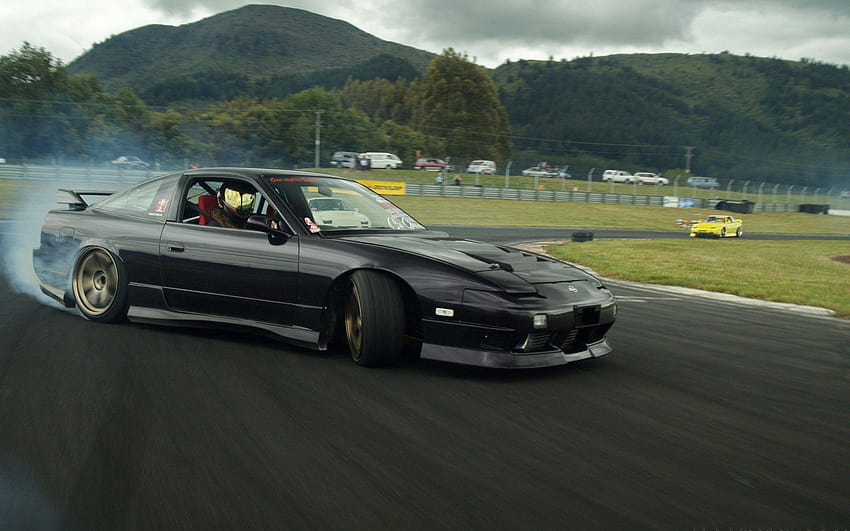

180sx
180SX（ワンエイティエスエックス）とは、日産自動車が製造していた3ドアハッチバッククーペ型の乗用車です。
| s15についての詳細表 | ||
|---|---|---|
| 概要 | 販売期間 | 1988年5月～1993年10月 |
| ボディ | 乗車定員 | 4人 |
| ボディタイプ | 2ドアクーペor2ドアコンバーチブル | |
| 駆動方式 | FR | |
| パワートレイン | エンジン |
J's/Q's CA18DE 直列4気筒1.8L NA SR20DE 直列4気筒2.0L NA (1991年1月-) |
| 最高出力 |
J's/Q's 135PS/6,400rpm(CA18DE) 140PS/6,400rpm(SR20DE) K's 175PS/6,400rpm(CA18DET) 205PS/6,000rpm(SR20DET) |
|
| 最大トルク | J's/Q's 16.2kgf·m/5,200rpm(CA18DE) 18.2kgf·m/4,800rpm(SR20DE) K's 23.0kgf·m/4,000rpm(CA18DET) 28.0kgf·m/4,000rpm(SR20DET) |
|
| 変速機 | 5速MT フルレンジ電子制御4速AT | |
s15

1981年5月17日発売。このモデルから2ドアクーペのみとなり、先代まで存在した3ドアハッチバック仕様は姉妹車として、1989年4月に「180sx」として独立した。
| 180sxについての詳細表 | ||
|---|---|---|
| 概要 | 販売期間 | 4人1989年5月～1999年1月 |
| ボディ | 乗車定員 | 4人 |
| ボディタイプ | 3ドアハッチバッククーペ | |
| 駆動方式 | FR | |
| パワートレイン | エンジン | 前期型:CA18DET 中後期:SR20DET 後期(S,G):SR20DE |
| 最高出力 | 175 PS/6,400 rpm(CA18DET) 205 PS/6,000 rpm(SR20DET) 140 PS/6,400 rpm(SR20DE) |
|
| 最大トルク | 23.0 kgf·m / 4,000 rpm(CA18DET) 28.0 kgf·m / 4,000 rpm(SR20DET) 18.2 kgf·m / 4,800 rpm(SR20DE) |
|
| 変速機 | 5速MT フルレンジ電子制御4速AT | |